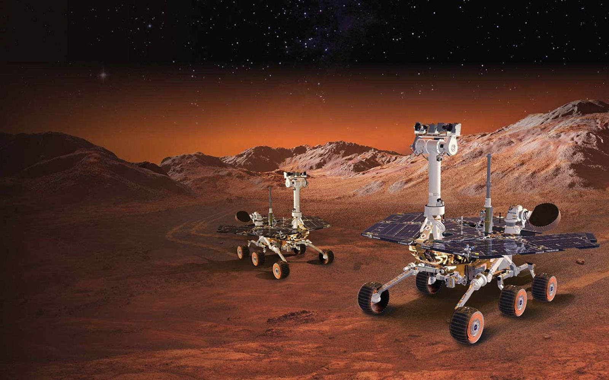

Spirit & Opportunity (2004-2010, 2019)
Primary Goals:
- Search for past water activity.
- Study Mars' climate and geology.
- Find signs of past habitability.
Key Contributions to Colonization:
Evidence of Water:
- Opportunity found hematite, a mineral that forms in water.
- Spirit discovered silica-rich deposits, suggesting ancient hydrothermal activity.
Why It Matters? Water is crucial for drinking, oxygen production, and fuel.
Dust & Wind Studies:
- Rovers experienced dust devils, which naturally cleaned their solar panels.
Why It Matters? Understanding dust behavior helps design self-cleaning systems for future Mars bases.
Terrain Navigation:
- Helped NASA understand how to design rovers for rocky, sandy, and unpredictable terrains.
Why It Matters? Future habitats and vehicles must withstand Martian conditions.